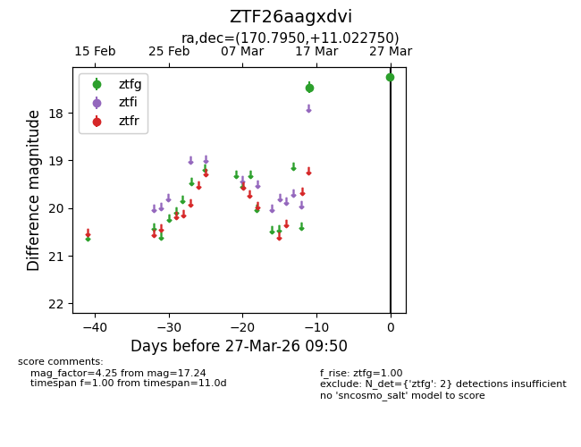
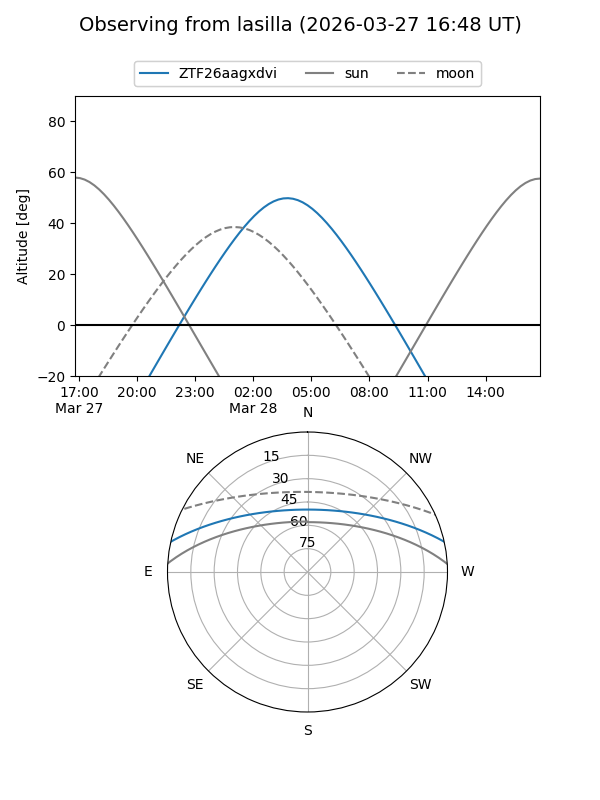
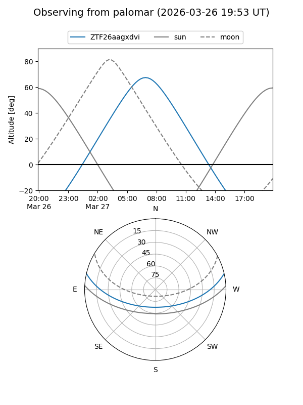

ZTF26aagxdvi
Target ZTF26aagxdvi at 2026-03-27 09:53
Aliases and brokers:
FINK: link
Lasair: link
ALeRCE: link
alt names
ZTF26aagxdvi (ztf,fink_ztf)
Coordinates:
equatorial (ra, dec) = 170.7950,+11.02275
equatorial (HMS+DMS) = 11:23:10.79,+11:01:21.90
galactic (l, b) = (246.4942,+63.73717)
Flags:
Photometry:
last ztfg=17.24
2 ztfg detections
Lightcurve

Visibility


Additional plots